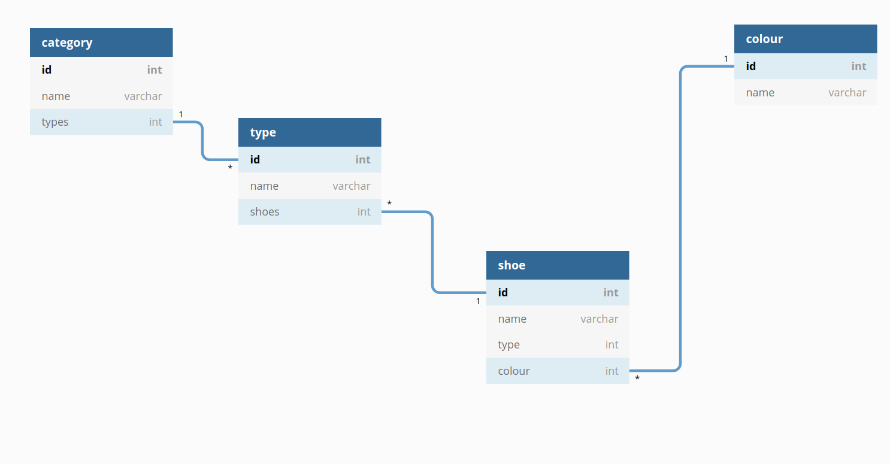

Data modelling: Blueprinting successful projects
Tomislav Buljević
@tomebuljevic
What is data modelling?
Process of creating a model of data stored in the database.
- data objects
- their relationships
- rules
- often overlooked
- grows organically
- mistakes cost A LOT
Several levels of the process
- Conceptual
- Logical
- Physical
Conceptual
- business side of the project
- received through the documentation
- system and database agnostic
- data as the user will see it
Logical
- development side of the project
- defines the relationships of the data objects
- database agnostic
- data as the developer will see it
Physical
- development side of the project
- defines the relationships of the data objects in the database (primary keys, functions, views, etc.)
- data as the system will see it
- depends on the implementation system
Most important level for developers?
Logical
Logical data modelling
Structure and hierarchy of data
How one data object influences others
How to begin?
- take a look at the conceptual side of things
- object variability (conceptually, what influences the object most?)
What to take into consideration
- how we are going to fetch data from the database
- how data should be input
- which groups of data are shown together on a single screen
Example
| Name | Type | Colour |
|---|---|---|
| Jazz | Sneaker | Blue / Red |
| Hip-Hop | Sneaker | Blue / Green / Red |
| Metal | Sneaker | Black |
| Posh | Oxford | Black / White |
| Student | Oxford | Black / Brown |
| Business | Oxford | Black / Brown |
| Name | Colour | Region | Year | Price |
|---|---|---|---|---|
| Jazz | Blue | East | 2019 | € 20 |
| Jazz | Blue | West | 2019 | € 22 |
| Jazz | Red | East | 2019 | € 15 |
| Jazz | Red | West | 2019 | € 17 |
| Jazz | Blue | East | 2020 | € 18 |
| Jazz | Blue | NorthWest | 2020 | € 20 |
| Jazz | Red | East | 2020 | € 17 |
| Jazz | Red | SouthWest | 2020 | € 19 |
Needs of the client
- select a year
- select a region
- show current prices
- have an archive of prices
Sort out the priorities
Which element:
- can stand alone?
- influences others the most?
- has its own hierarchy?
Start from the general, working your way to the individual
Most important elements:
Shoe
Region
Year
Price
Determine hierarchy and modularity
Shoe
Name - changes from article to article
Type - changes from group to group
Colour - changes from article to article
- Does the manufacturer regularly add new models?
- Do they add new colours?
- Will we ever need to filter out shoes based on Type or Colour?
One possible solution
Shoe hierarchy and relations
 * Done with https://dbdiagram.ioPrice hierarchy and relations

Important guidelines
- watch out for relations
- be precise and concise
- question the variability of objects
- make it modular
- after you create a data model, review it... possibly with a peer